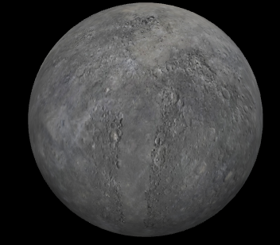
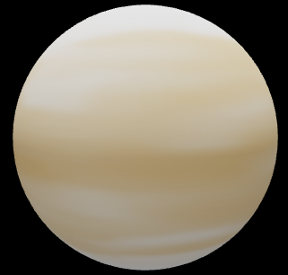

Mercurio
Mercurio es el planeta más pequeño de nuestro sistema solar.
Simplemente, es un poco más grande que la Luna de la Tierra.
Es el planeta más cercano al Sol, pero no es realmente el más cálido. Venus es el más cálido.

Estructura y Superficie
- Es el planeta más pequeño de nuestro sistema solar.
- Es un planeta terrestre: es pequeño y rocoso.
- Tiene una atmósfera poco densa.
El tiempo en Mercurio
- Su día dura 59 días terrestres.
- Su año dura 88 días terrestres.
Video sobre las características más extrañas de Mercurio
Venus
Aunque Venus no es el planeta más cercano al Sol, es el más caliente.
Tiene una atmósfera densa, llena de dióxido de carbono, que provoca el efecto invernadero, y de nubes compuestas de ácido sulfúrico.
Los gases atrapan el calor y mantienen a Venus bien calentito.
De hecho, hace tanto calor en Venus que metales como el plomo serían charcos de metal fundido.

Estructura y Superficie
- Es el planeta más cálido del sistema solar.
- Es un planeta terrestre: es pequeño y rocoso.
- Su atmósfera es densa: atrapa el calor y por eso es tan caluroso.
- Tiene una superficie activa, que incluye volcanes.
- TienGira en dirección contraria a la Tierra y la mayoría de los planetas.
El tiempo en Venus
- Su día dura 243 días terrestres.
- Su año dura 225 días terrestres.
Video sobre 10 curiosidades de Venus